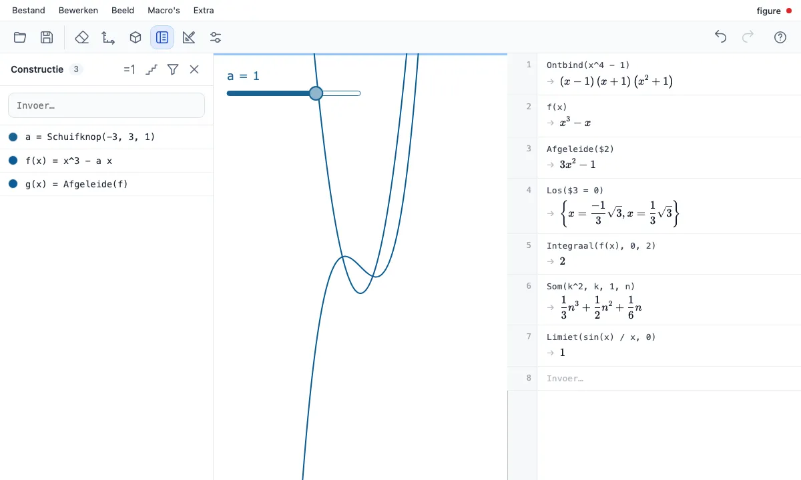

Computeralgebra
DocGeo rekent met exacte waarden via Giac, de computeralgebra-motor van Xcas: afgeleiden, primitieven, ontbindingen, vergelijkingen, limieten, sommen, in de formules van de figuur en in een CAS-weergave. Het vindt ook de vergelijking van een meetkundige plaats en bewijst meetkundige eigenschappen.

Giac wordt geladen wanneer een berekening het voor het eerst nodig heeft, nooit voor een figuur die het niet nodig heeft. De laatste antwoorden worden in de figuur bewaard: ze opent en wordt getoond zonder op Giac te wachten, ook offline. Kan Giac niet worden geladen, dan verschijnt linksonder „⚠ Giac”: de al bekende antwoorden blijven getoond, de andere zijn ongedefinieerd.
De computeralgebra-opdrachten
Ze worden in elke formule gebruikt, als een functie. Een uitdrukking waarvan de formule alleen een van deze opdrachten is, toont het antwoord van Giac in plaats van haar formule.
| Opdracht | Resultaat |
|---|---|
Afgeleide(f),
Afgeleide(e, v),
Afgeleide(e, v, n)
|
afgeleide, n-de afgeleide naar v |
Integraal(e),
Integraal(e, v)
|
primitieve |
Integraal(x^2, 0, a),
Integraal(e, v, a, b)
|
integraal van a tot b, exacte waarde |
Ontbind(e) |
ontbinding over de rationale getallen:
x^2 - 2 blijft zoals het is
|
OntbindIrrationaal(e) |
ontbinding met wortels: (x − √2)(x + √2) |
Uitwerken(e),
Vereenvoudig(e)
|
uitgewerkte vorm, vereenvoudigde vorm |
Los(x^2 = 2),
Los(e, v)
|
gesorteerde lijst van de reële oplossingen van een vergelijking, of van een uitdrukking gelijk aan nul |
CLos(e) |
complexe oplossingen |
Som(e, k, a, b) |
som van de e voor gehele k van a tot b |
Limiet(e, a),
Limiet(e, v, a)
|
limiet in a, dat ook ∞ kan zijn
|
Taylorveelterm(e, a, n),
Taylorveelterm(e, v, a, n)
|
taylorveelterm van orde n in a |
De variabele v is x, y, z of t, standaard de eerste die de
uitdrukking leest. Een functie van de figuur schrijf je met haar
naam: g(x) = Afgeleide(f).
-
Een schuifknop blijft voor Giac een symbool:
Ontbind(x^2 - a)toont x² − a, ook als a gelijk is aan 4. De schuifknop verschuiven vraagt Giac dus niets: het antwoord wordt tijdens de beweging alleen opnieuw geëvalueerd. -
Uitzonderingen: de orde n van een taylorveelterm en de
grenzen van een som zonder eenvoudige vorm (
Som(1/k, k, 1, n)) worden via hun waarde gelezen: een schuifknop geeft één antwoord per gehele waarde. -
Integraal(f, a, b), waarbij f de naam van een functie is, blijft de opdracht die de oppervlakte tekent;Integraal(x^2, 0, 1)ofIntegraal(e, v, a, b)berekent de exacte waarde. - Zolang het antwoord er niet is, behoudt het object zijn laatste waarde. Een antwoord dat DocGeo niet kan lezen, maakt het object ongedefinieerd. Een afgeleide berekent DocGeo zelf, in afwachting van Giac.
De CAS-weergave
Zoals in GeoGebra: genummerde rekenregels, naast de figuur of in een eigen tabblad.
| Actie | Hoe |
|---|---|
| De weergave toevoegen | Bestand › Weergave › Nieuwe CAS-weergave (één per figuur), of Bestand › Nieuw CAS-tabblad („CAS1”, „CAS2”…) |
| Een regel berekenen | typ in de laatste, lege regel, dan Enter: het antwoord verschijnt en een nieuwe regel wacht |
| Een regel terughalen | in de laatste regel haalt ↑ de vorige regels terug, de nieuwste eerst, en ↓ keert terug naar de tekst die je typt, zoals in een terminal |
| Een naam aanvullen | vanaf de tweede letter stelt een lijst de opdrachten, de functies, de objecten van de figuur en de in de weergave gedefinieerde namen voor: ↑ en ↓ om te kiezen, Tab of Enter om in te voegen, Esc om te sluiten |
| Een regel wijzigen | klik erop, dan Enter; Esc zet de vorige tekst terug, ↑ en ↓ gaan van regel naar regel |
| Een regel verwijderen | maak hem leeg, dan Enter: de volgende nummers schuiven op |
| De weergave verwijderen | Bestand › Weergave › CAS-weergave verwijderen |
Elke wijziging maak je ongedaan met Ongedaan maken. Een onbegrepen regel wordt geweigerd, in het rood.
Een regel schrijven
-
Een regel is een formule, met of zonder opdracht:
sqrt(12) - sqrt(3)geeft √3,Ontbind(x^4 - 1)de ontbinding. -
$2is het antwoord van regel 2. Wordt een regel verwijderd, dan worden de$nhernummerd, en een verwijzing naar de verwijderde regel wordt vervangen door zijn formule. -
b := 3enh(x) := x^2 + 1definiëren een getal of een functie voor de volgende regels. -
De objecten van de figuur worden gelezen met hun huidige
waarde: met a = 2 geeft
a^24. Worden ze verplaatst, dan worden de regels die ze lezen opnieuw berekend. Een letter die geen object is, is een vrije variabele:b^2blijft b². -
pienlnschrijf je zoals in GeoGebra,∞ookinf. Hoeken zijn altijd in radialen, ook in een figuur in graden. -
Numeriek(e),Numeriek(e, n)geven een benaderde waarde (op n cijfers);BewaarInvoer(e)toont e zoals het is, zonder berekening. Een regel tussen aanhalingstekens,"Exacte berekening", is gewone tekst. -
?vervangt een antwoord dat Giac niet geeft of dat DocGeo niet kan lezen.
Aanwijzen met de muis
Tijdens het typen van een al begonnen regel schrijft een klik op
een object van de figuur zijn naam; een klik op een andere regel
schrijft haar $n. Op een lege regel reageert de
figuur zoals gewoonlijk.
Een object van de figuur definiëren
Een definitie die alleen objecten van de figuur leest, maakt ook
het object aan, met zijn regel in de Constructie:
m(x) := x^2 + a tekent de functie m. Een definitie
die een vrije variabele, een $n of een alleen in de
weergave gedefinieerde naam leest (n := b^2),
blijft eigen aan de weergave.
In de speler worden de regels getoond in de taal van de browser.
Algebraïsche krommen
Een vergelijking van willekeurige graad, of niet veeltermig,
getypt in de Constructie, is een kromme:
f = x^3 + y^3 = 3x y (het folium van Descartes),
c = sin(x) = y. Ze wordt getekend waar ze het
venster doorkruist en volgt het venster wanneer je het
verschuift; je kunt er punten op plaatsen en haar snijden met
andere objecten.
| Opdracht | Resultaat |
|---|---|
VergelijkingMP(M, P) |
de hele kromme die het punt M beschrijft wanneer het punt op object P zijn object doorloopt |
OmhullendeVergelijking(d, P) |
de hele kromme die raakt aan de standen van de rechte d wanneer P zijn object doorloopt |
Zoals in GeoGebra is het de hele vergelijking, met al haar
takken, en niet alleen het doorlopen deel:
VergelijkingMP van een punt dat een lijnstuk
doorloopt, geeft de rechte. In afwachting van Giac, of voor een
constructie die het niet vertaalt (macro’s, bissectrices,
ingeschreven cirkel, schuifknop als aandrijving, ruimte), is het
de doorlopen meetkundige plaats van
MeetkundigePlaats.
Bewijzen
Zes predicaten, waarvan elk argument de naam van een object is,
zeggen of een eigenschap geldt in de figuur zoals ze is:
true of false.
| Predicaat | Waar als |
|---|---|
ZijnCollineair(A, B, C) |
de drie punten collineair zijn |
ZijnEvenwijdig(d, e),
ZijnOrthogonaal(d, e)
|
de rechten, lijnstukken of halfrechten evenwijdig, loodrecht zijn |
ZijnConcyclisch(A, B, C, D) |
de vier punten op één cirkel (of één rechte) liggen |
ZijnConcurrent(d, e, f) |
de drie rechten door één punt gaan (of evenwijdig zijn) |
ZijnGelijk(a, b) |
twee punten, rechten of cirkels samenvallen; twee lijnstukken even lang zijn; twee getallen gelijk zijn |
Bewijs(p), met p een van deze predicaten, zegt of
het in het algemeen waar is: voor alle standen van de
vrije punten en de punten op objecten, behalve ontaarde
gevallen. Met G = Zwaartepunt(A, B, C) wordt
ZijnCollineair(A, B, G) waar wanneer je C op (AB)
zet, maar Bewijs(ZijnCollineair(A, B, G)) blijft
onwaar. Giac vertaalt de constructie in vergelijkingen, zoals
GeoGebra: het antwoord komt hooguit na enkele seconden en wordt
in de figuur bewaard.
-
De berekening dekt alle snijpunten tegelijk: om over het
tweede snijpunt van een rechte en een cirkel door een punt A
te spreken, construeer je het met
AnderSnijpunt(c, d, A). -
Bewijsblijft ongedefinieerd voor een constructie die het niet vertaalt (die van VergelijkingMP, of een hoek, een verhouding of een straal die geen eenvoudige breuk is, zoals een rotatie over 60°), en in de CAS-weergave. -
De argumenten zijn namen: construeer en benoem eerst de
rechten,
Bewijs(ZijnEvenwijdig(d, e)).
GeoGebra-figuren
Bij het importeren worden de computeralgebra-opdrachten van de
formules, de regels van de CAS-weergave van GeoGebra, die van
zijn Rekenmachine Suite, LocusEquation,
Envelope, Prove en de predicaten
overgenomen. Een cel die een opdracht gebruikt die DocGeo niet
heeft, wordt gemeld.